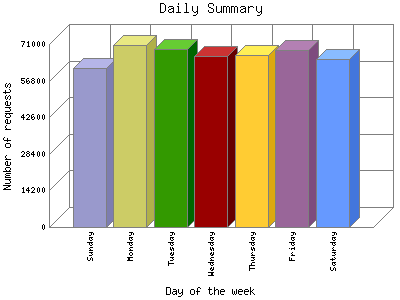

Analog 5.24
Analog 5.24 Report Magic for Analog 2.13
Report Magic for Analog 2.13The Daily Summary identifies the level of activity as a total for each day of the week. This summary also compares the level of activity on weekdays and weekends as a total for the report time frame.

| Day of the week | Number of requests | Percentage of the requests | |
|---|---|---|---|
| 1. | Sunday | 61,818 | 13.20% |
| 2. | Monday | 70,759 | 15.10% |
| 3. | Tuesday | 69,074 | 14.73% |
| 4. | Wednesday | 66,225 | 14.13% |
| 5. | Thursday | 66,885 | 14.28% |
| 6. | Friday | 68,860 | 14.70% |
| 7. | Saturday | 65,024 | 13.88% |
| Total Weekdays | 341,803 | 72.93% | |
| Total Weekend | 126,842 | 27.7% | |
This report was generated on April 3, 2016 02:21.
Report time frame August 10, 2010 08:36 to April 3, 2016 04:37.
| Web statistics report produced by: | |
| Analog 5.24 | Report Magic for Analog 2.13 |